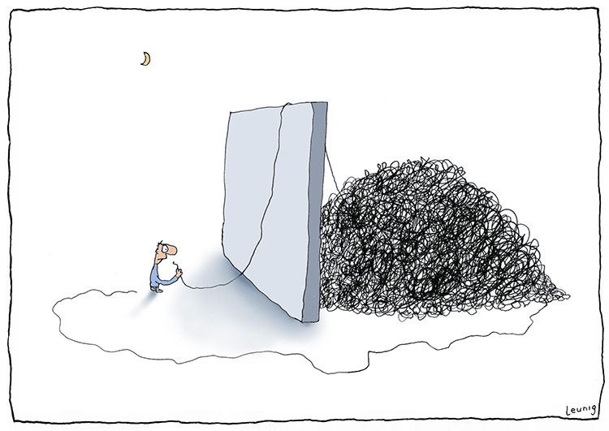
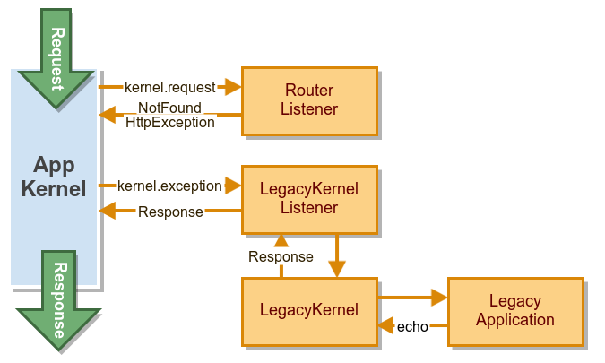

Tackling Technical Debt
– breathe new life into a legacy project with Symfony2
November Camp 14.11.2014
by Carl Vuorinen /
@cvuorinen
Legacy
Image by Michael Leunig
Full rewrite
- Costly & risky
- Often fails
- Usually not an option
Gradual migration
- Legacy & Fullstack Symfony2 side by side
- Write new features on Symfony side
- Maintain old code on legacy side
- Gradually modernize and migrate old code to Symfony side
Goals
- No "downgrade" or regressions
- Smoothly migrate old code over time
- End-user doesn't know there are two systems
or notice the difference between old and new
Objectives
- Same layout and UI
- Shared authentication
- User only logs in once
- Shared configuration
- Parameters only defined in one place
- Easy for developers to work with and deploy
Introducing reference project
- About 12 years old
- Which is like 84 in Internet years!
- Lots of different developers over the years
- 116 748 LOC
- No tests
- Let's look at some code
index.php "autoloader"
// Load configuration
require_once ("config.php");
require_once ("includes/funcs.php");
require_once ("includes/common.php");
// Load classes
require_once ("classes/info.php");
require_once ("classes/user.php");
require_once ("classes/dir.php");
// ... ~100 lines more
index.php "router"
switch ($page) {
case "user":
$user = new User($user_id);
if ($action == 'edit') {
$body = $user->editUser();
} else {
$body = $user->userInfo();
}
break;
case "page2":
$heading = "Some page";
$body = get_some_page();
break;
// ... ~1500 lines more
}Classes (A.K.A. God objects)
class User extends Db
{
// inherits from Db (but sometimes overridden)
function save() {}
function delete() {}
function log() {}
function checkAccess() {}
function formTextInput() {}
function validateDate() {}
// ... lots more
function printMenu() {}
function printInfo() {}
function printUpdateForm() {}
// ... lots more
}Alternatives
- Totally separate applications, using same database
- Running on the same server, but different doc root
- Web server handles routing (subdomain etc.)
- Use Symfony components inside the legacy app
- Run legacy app through Symfony fullstack framework
Run legacy app through Symfony
- Write new features into Symfony bundles
- Forward non-Symfony routes to legacy app
- Integrate legacy app with Symfony
- Use Symfony components in legacy app
- Use new code written in Symfony bundles in legacy app
Forward non-Symfony routes to legacy app
- Use Symfony kernel events
- LegacyKernel + LegacyKernelListener
- Include legacy "front controller"
- Capture output and return in a Response object
Legacy Request lifecycle

class LegacyKernel implements HttpKernelInterface
{
public function handle(Request $request, ...)
{
ob_start();
$legacyDir = dirname($this->legacyAppPath);
chdir($legacyDir);
require_once $this->legacyAppPath;
$response = new Response(ob_get_clean());
return $response;
}
}
class LegacyKernelListener implements EventSubscriberInterface
{
public function onKernelException($event)
{
$exception = $event->getException();
if ($exception instanceof NotFoundHttpException) {
$request = $event->getRequest();
$response = $this->legacyKernel->handle($request);
// Override 404 status code with 200
$response->headers->set('X-Status-Code', 200);
$event->setResponse($response);
}
}
}
Alternatives to LegacyKernel
& LegacyKernelListener
- Try to include all 'filename.php' routes
- Whitelist all possible 'filename.php' routes
- Watch for certain GET param
- etc.
LegacyController + "Catch All" route
class LegacyController extends Controller
{
/**
* @Route("/{filename}.php", name="_legacy")
*/
public function legacyAction($filename)
{
$legacyPath = $this->container
->getParameter('legacy.path');
ob_start();
chdir($legacyAppPath);
require_once $legacyAppPath . $filename . '.php';
$response = new Response(ob_get_clean());
return $response;
}
}
Test Route with router:match
$ app/console router:match /index.php
Route "_legacy" matches
[router] Route "_legacy"
Name _legacy
Path /{filename}.php
Host ANY
Scheme ANY
Method ANY
Class Symfony\Component\Routing\Route
Defaults _controller: CvuorinenLegacyBundle:Legacy:legacy
Requirements
Options compiler_class: Symfony\Component\Routing\RouteCompiler
Path-Regex #^/(?P<filename>[^/\.]++)\.php$#s
There's a bundle for that
-
Ingewikkeld /
IngewikkeldWrapperBundle
- For Symfony 1 projects
-
theodo /
TheodoEvolutionLegacyWrapperBundle
- For Symfony 1 & CodeIgniter projects
Integrate legacy app with Symfony
- Goal: Use Symfony services in legacy app
- Assign Request & Service Container
to a variable in legacy scope - Get any Service or Parameter from the container in legacy app
- Any Symfony component or Symfony framework built-in service
- Any custom service written in Symfony bundles
class LegacyKernel implements HttpKernelInterface
{
public function handle(Request $request, ...)
{
// ...
// Assign Container to a local variable
// so it can be used in legacy app
$container = $this->container;
// Request is already in a local variable
require_once $this->legacyAppPath;
// ...
}
}
Configuration
- Goal: DRY (configuration defined in only one place)
- Move legacy configuration to Symfony
parameters.yml - Get parameters from container in legacy side
Version Control
- Goal: easy to work with and deploy
- Different repos for Symfony app & Legacy app
- Legacy in subdirectory as git submodule
- OR
- Legacy as a composer dependency
composer.json
{
"require": {
...
"cvuorinen/legacy-example": "dev-symfony-integration",
},
...
"repositories": [
{
"type": "vcs",
"url": "git@github.com:cvuorinen/legacy-example.git"
}
]
}
Assets
- Goal: legacy works without modification & easy to deploy
- Symlink legacy asset directories from Symfony
web/dir
$ ls -l web/ app_dev.php app.php config.php css -> ../legacy/css favicon.ico images -> ../legacy/images robots.txt
Automate symlinks with composer scripts
{
...
"scripts": {
"post-install-cmd": [
...
"Cvuorinen\\LegacyBundle\\Composer\\AssetSymlinks::create",
],
"post-update-cmd": [
...
"Cvuorinen\\LegacyBundle\\Composer\\AssetSymlinks::create",
]
},
"extra": {
...
"legacy-app-dir": "legacy",
}
}Shared Authentication
- Goal: User logs in once, authenticated for both legacy and Symfony app
- Alternatives:
- Move Auth to Symfony side and refactor legacy code to use it
- Keep legacy Auth and create a Symfony wrapper for it
Custom Authentication Provider
- Just read values from session that legacy app assigned during login
- Custom Authentication Provider requires at least 6 classes
- The
SimplePreAuthenticatorInterfacewas introduced in Symfony 2.4. - More info in Symfony docs:
symfony.com/doc/current/cookbook/security/custom_authentication_provider.html
symfony.com/doc/current/cookbook/security/api_key_authentication.html
Same layout and UI
- Goal: both legacy and Symfony app look the same
- Create Twig base layout by copying from legacy
- Layout changes so rarely, it doesn't really matter that it's duplicated in two places
- Problem: layout areas that have some logic
- For example: navigation & menus, user personalized info/actions
- We don't want to duplicate that logic
Shared layout components
- Crawl legacy app from Symfony
- Load from legacy app by Symfony sub-request or ESI
- Port over to a Symfony service/Twig extension etc.
Symfony sub-request in layout.html.twig
...
<div id="sidebar">
{% block sidebar %}
{{ render(url('_legacy', {filename: 'menu'})) }}
{% endblock %}
</div>
...
Database access
- Goal: both legacy and Symfony apps use the same database
- Symfony side uses Doctrine ORM
- Map database tables as Doctrine Entities
- Only when needed
- Use meaningful names in the Entity
config.yml
...
doctrine:
dbal:
...
schema_filter: ~^(?!(^some_table$)|(^stuff$) ⏎
|(^super_secret_admin_stuff$) ⏎
... # many, many tables here
(^last_table$))~
Part 1: Symfony integration
- Same layout and UI
- Shared authentication
- User only logs in once
- Shared configuration
- Parameters only defined in one place
- Easy for developers to work with and deploy
Part 2: Refactoring legacy
- Gradual migration
- Smoothly migrate old code over time
- Don't try to do too much at once
- Write tests!
- Perfect is the enemy of better.
Write tests
- Unit & functional tests if you can
- If your legacy project is immune to unit testing,
write characterization tests- "a characterization test is a means to describe (characterize) the actual behavior of an existing piece of software, and therefore protect existing behavior of legacy code..."
en.wikipedia.org/wiki/Characterization_test
- "a characterization test is a means to describe (characterize) the actual behavior of an existing piece of software, and therefore protect existing behavior of legacy code..."
Database access
- Move raw database queries to doctrine repositories
- Get repository object from container in legacy app
UserRepository.php
use Doctrine\DBAL\Connection;
class UserRepository
{
/**
* @param Connection $connection
*/
public function __construct(Connection $connection) {}
/**
* @return array
*/
public function fetchAll() {}
/**
* @param int $userId
*
* @return array
*/
public function findById($userId) {}
}Legacy functions.php etc.
function getUserName($id)
{
$userRepo = $GLOBALS['container']
->get('cvuorinen.example.repository.user');
$user = $userRepo->findById($id);
return $user->name;
}
Example Code in GitHub
-
cvuorinen /
symfony-legacy-example
- Branches & tags for different stages of integration
Thank you !
Please leave feedback
|
@cvuorinencvuorinencvuorinen.net |